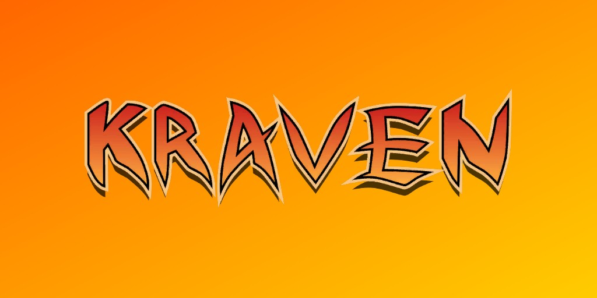
Kraven le Chasseur (Sergeï Kravinoff) (Terre-616)
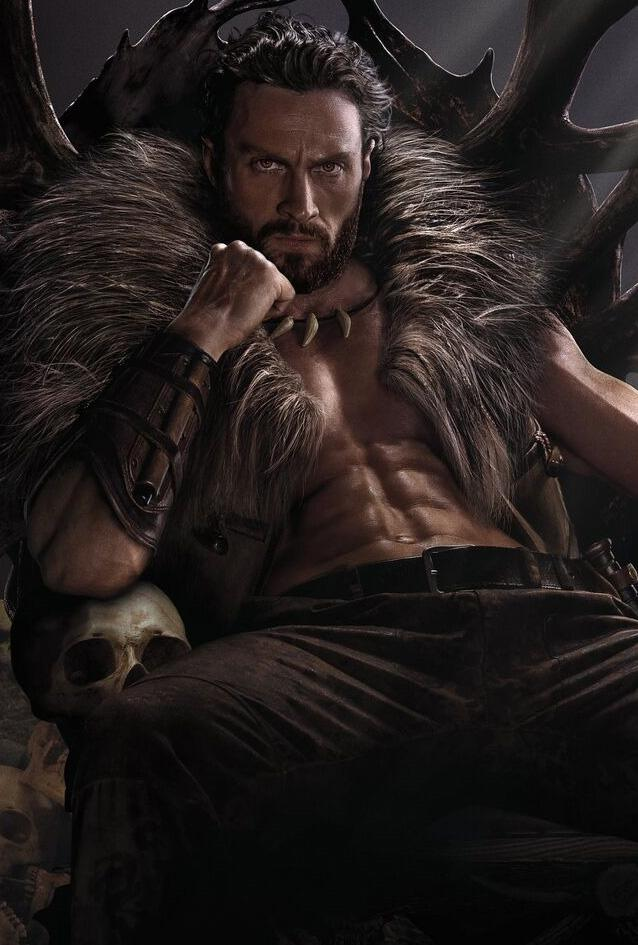
Origines :
Sergeï Kravinoff est né à Volgograd vers 1920, pendant la Révolution Russe.
Issu d'une famille aristocrate sur le déclin, il devient un chasseur professionnel réputé.
Kravinoff partit s'installer au Kenya pour y traquer du gibier exotique, où il apprit l'art traditionnel de la chasse des tribus Africaines.
Un jour, il fit la rencontre de la sorcière Calyspo, et ingéra une potion mystique qui lui conféra une force et une vitesse dignes d'un grand fauve, tout en ralentissant sa vieillesse.
On ignore les circonstances, mais il rencontra le mutant Victor Creed et l'Atlante Namora à cette période.
En 1959, le trio fut approché par Nick Fury, qui désirait les intégrer à son équipe de Vengeurs, mais Kraven tira sur Creed à cause d'une vieille querelle, et Fury leur demande de faire la paix.
L'équipe se rendit en Suède pour débusquer Crâne Rouge qui tentait de mettre au point un sérum de Super-Soldat pour son Quatrième Reich.
Durant l'assaut du château, Kraven tira de nouveau sur Creed, par accident cette fois.
Fury déclara ensuite devoir s'absenter quelques mois, et il laissa son équipe.
Il fit son retour à l'automne et invita les membres dans un club de New York City.
Là encore, Kraven et Creed s'affrontèrent.
Namora et Kraven partirent se calmer sur les docks quand ils furent la cible d'un sous-marin Nazi, qu'ils réussirent à couler.
Quand d'autres membres furent à leur tour attaqués, Fury rassembla une équipe.
Leur allié, Powell McTeague, les téléporta en Mer de Chine, sur un bateau Nazi appartenant au Baron Blood et Brain Drain.
Mais les vilains s'échappèrent en se téléportant à leur tour.
Les Vengeurs attaquèrent le Q.G. Des Nazis et capturèrent l'un des cadres.
Ils apprirent que l’organisation nazi derrière les attaques était ICON et qu'elle visait le Wakanda.
Lors du combat suivant, Kraven terrassa le Doctorangutan, en lui enfonçant un taser dans la bouche.
L'équipe partit ensuite pour Washington D.C. pour arrêter Geoffrey Sydenham, le chef d'ICON.
Kraven empala le Baron Blood d'un pieu recouvert d'argent, puis retourna pêcher dans le sud de la Floride.
Chasser le gros gibier commença à lasser Kraven, et il fut encouragé par son demi-frère Dmitri à affronter une proie spéciale : Spider-Man.
Sa maîtresse Calypso lui procura des élixirs pour augmenter ses capacités physiques.
Malgré l'aide du Caméléon, il échoua à deux reprises face au Tisseur et fut déporté des États-Unis.
Il fut ensuite recruté par le Docteur Octopus pour rejoindre les Sinister Six, mais même en équipe, ils échouèrent.
Peu de temps après, Kraven fut employé par le Bouffon Vert pour tuer Spider-Man.
Mais en apprenant la mort apparente du Bouffon, Kraven chercha à trouver les faiblesses de Spider-Man en manipulant d'autres vilains, comme le Rhino, le Lézard ou le Vautour, qu'il lança contre sa cible.
Il kidnappa ensuite le Docteur David Malraux qui avait développé un produit psychomoteur avec lequel Kraven comptait améliorer ses réflexes, puis affronta Tigra, qui le battit.
Son incapacité à vaincre Spider-Man l'obséda jusqu'à la folie.
Il mit au point un plan pour l'attraper, et lui injecta un produit, plongeant Spider-Man dans le coma, puis l'enterra vivant.
Par la suite, il se procura un costume de Spider-Man noir et pourchassa une quinzaine de criminels qu'il blessa ou tua, en usurpant l'identité de son adversaire.
Il traqua ensuite le super-vilain Vermine et le captura (alors que Spider-Man avait eu besoin de l'aide de Captain America pour le vaincre).
Spider-Man se réveilla au bout de deux semaines et sortit de sa tombe, accueilli par Kraven qui proclama l'avoir vaincu, puis relâcha Vermine.
Kraven laissa même un mot aux policiers expliquant qu'il s'était fait passer pour Spider-Man et qu'il était responsable des tueries.
Une fois fait, il se suicida à l'aide de son fusil, laissant son corps reposer dans un cercueil qu'il avait spécialement préparé à cette occasion.
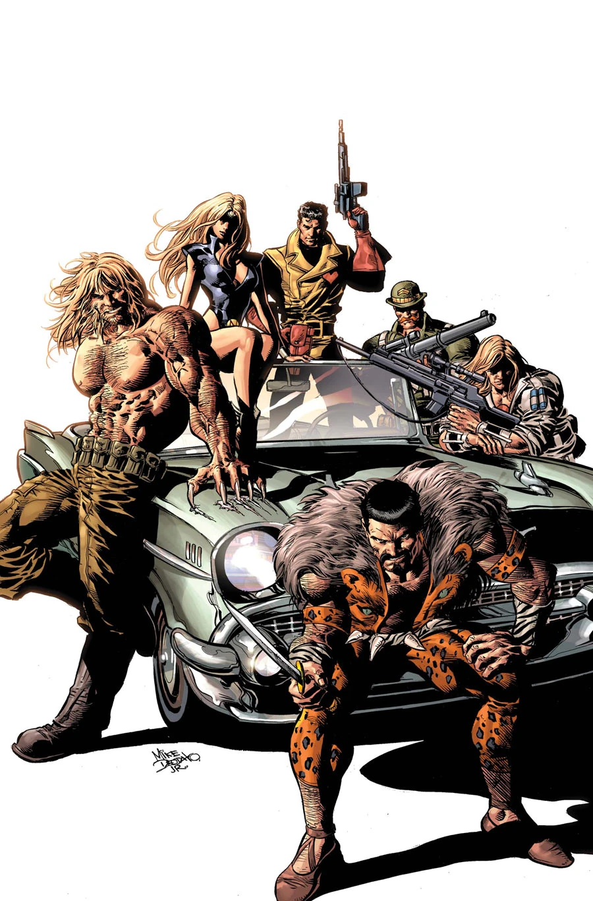
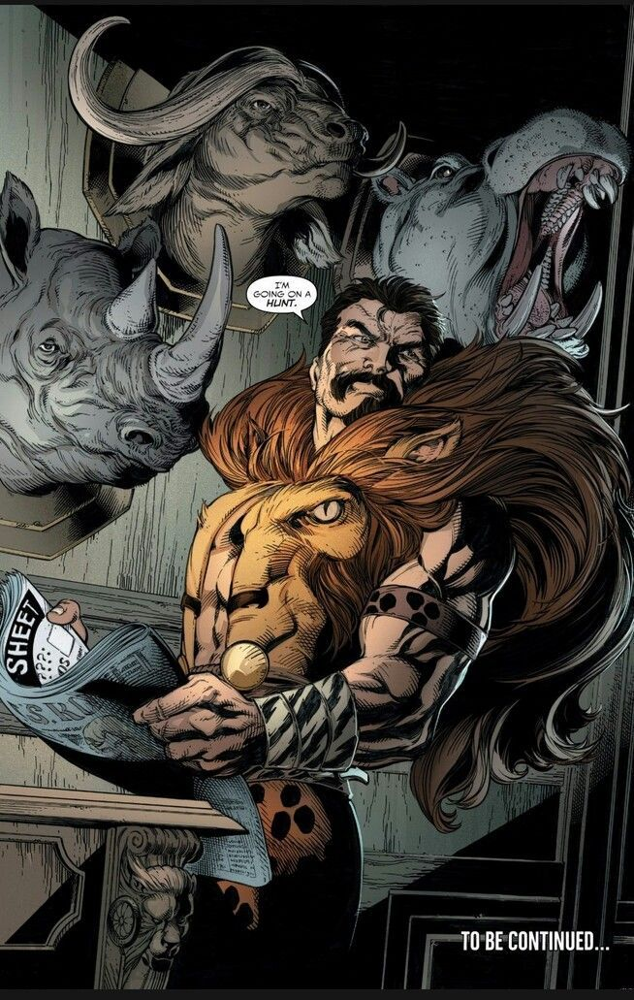
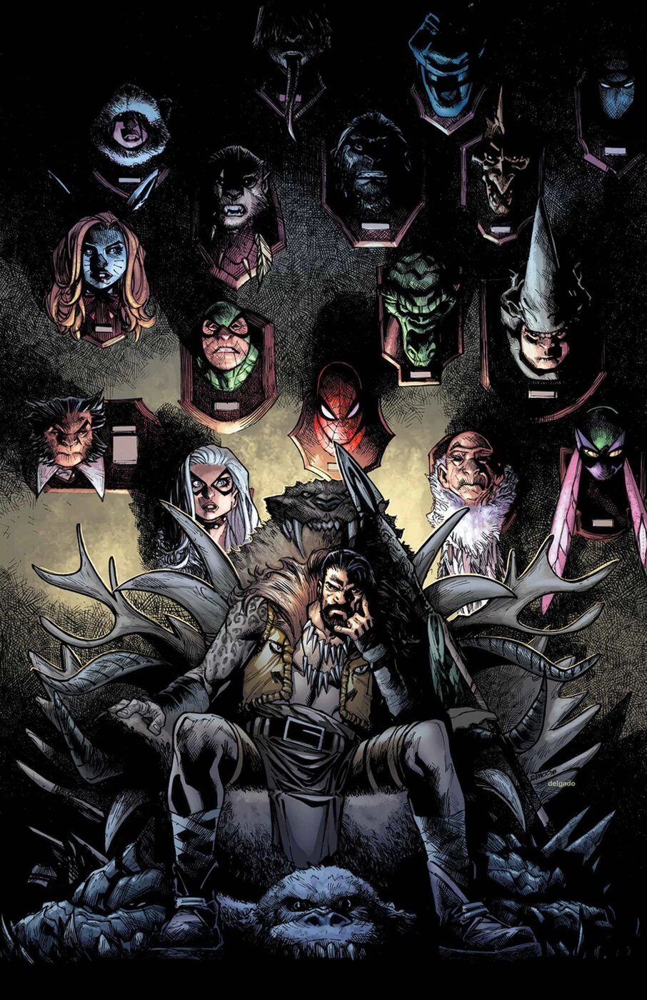
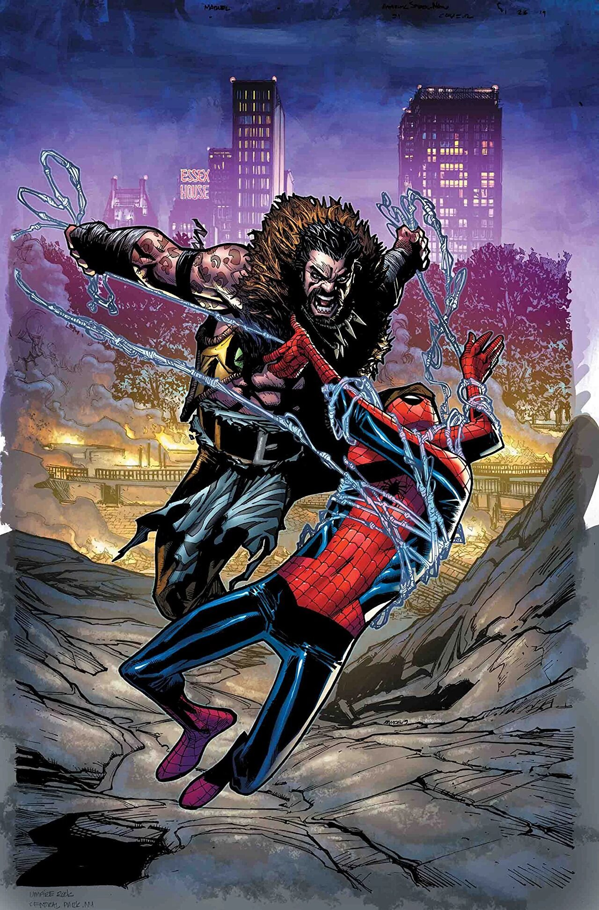
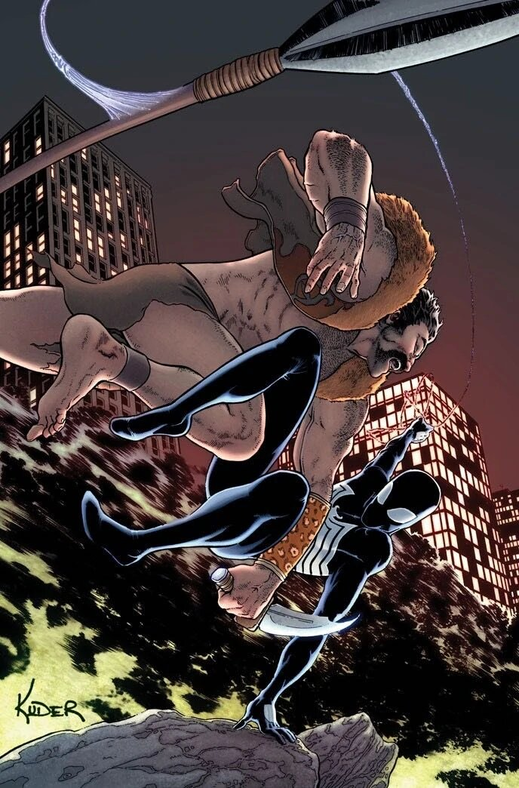
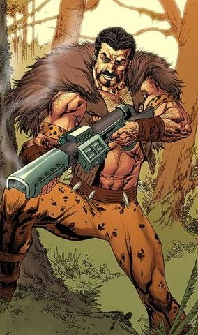
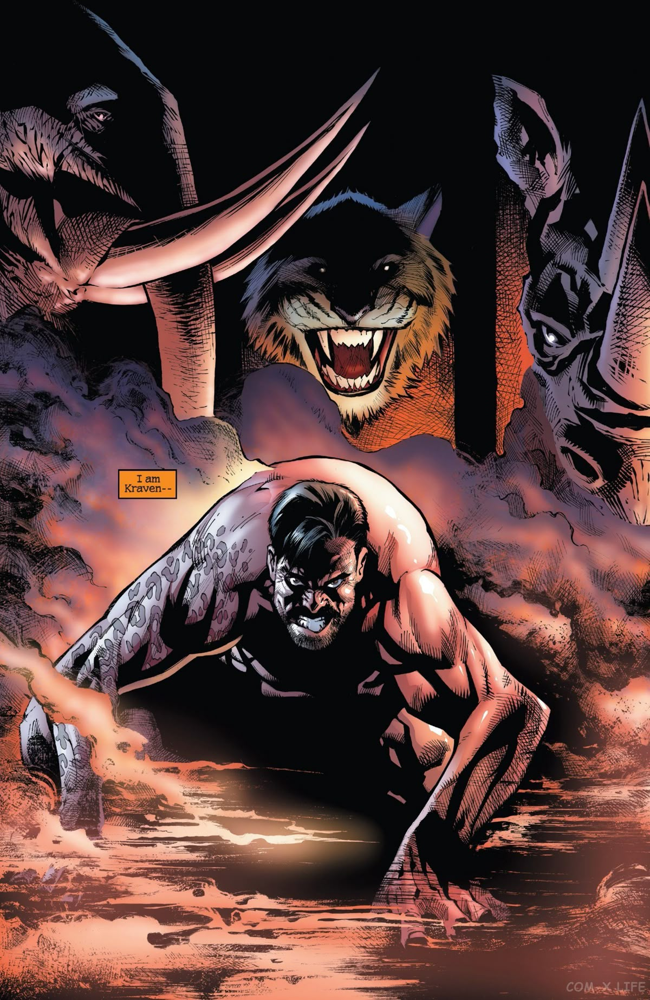


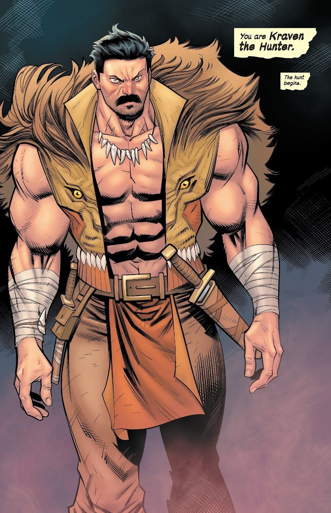
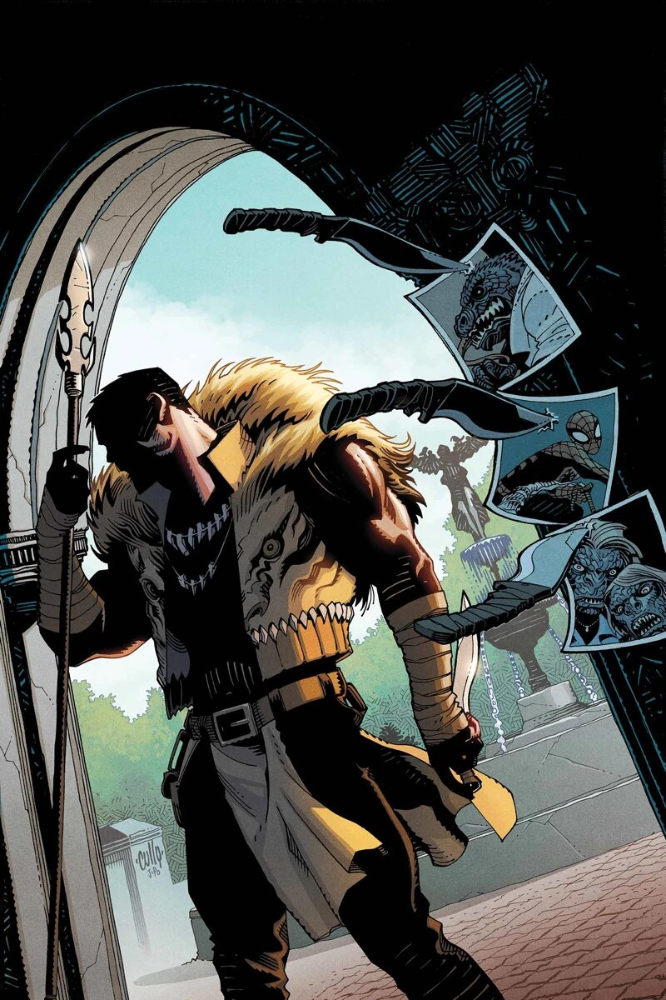
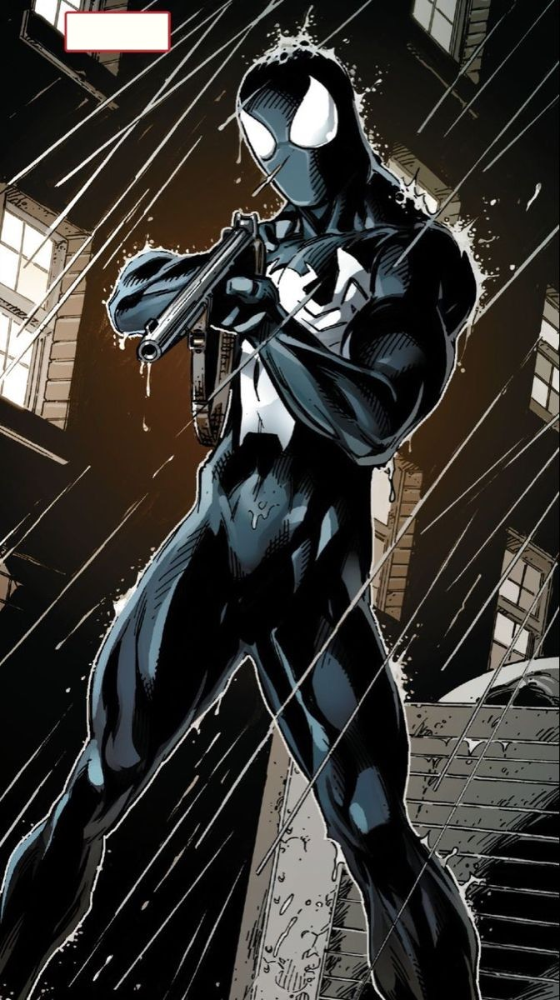
Capacités :
Avant d'avoir ses pouvoirs surhumains, Kravinoff était déjà un athlète de niveau olympique.
C'est un tacticien chevronné, un chasseur de bêtes sauvages et un combattant au corps à corps expert.
Sergueï possède également une grande connaissance des points de pression, autant chez les humains que chez de nombreux animaux, lui permettant de neutraliser des adversaires ou des animaux plus puissants que lui en frappant ces grappes nerveuses avec une précision extrême.
En ingérant régulièrement une potion fabriquée à partir de diverses herbes de la jungle, Sergueï a développé un instinct hors du commun, lui permettant d'anticiper et d'esquiver la plupart des coups de ses adversaires.
La potion a améliorée sa vue, lui permettant de voir beaucoup plus loin et avec beaucoup plus de clarté qu'un humain normal.
Son audition est également améliorée, ce qui lui permet de détecter des sons qu'un humain ordinaire ne pourrait entendre, et sur des distances beaucoup plus grandes.
Il peut traquer ses proies grâce à son odorat, comme certains animaux.
Son corps est également très résistant.
Il peut chuter de plusieurs étages sans se blesser.
La potion a également ralenti (voire stoppée) son vieillissement, si bien qu'à l'âge de 70 ans, il possède l'apparence et la forme physique d'un homme âge d'une trentaine d'années.

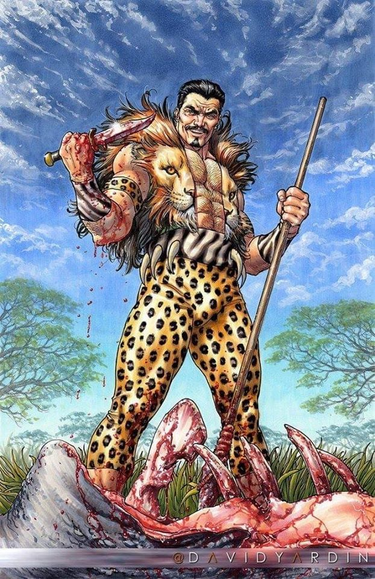
Apparence :
Kraven est un homme imposant, musclé et athlétique.
Il apparaît torse-nu, où peu couvert, mettant en valeur sa puissance physique.
Il porte généralement une veste sans manches faite d'une tête et d'une crinière de lion (le visage du lion est souvent cousue sur son torse, les crocs ouverts au niveau du col).
Son pantalon est zébré ou léopard, et il porte souvent des bottes de chasseur, et parfois des bracelets en peau d'animal.
Il arbore souvent une ceinture avec des couteaux, des lances ou des fioles de potion.
Équipes affiliées


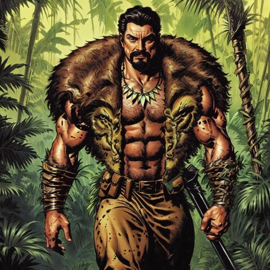
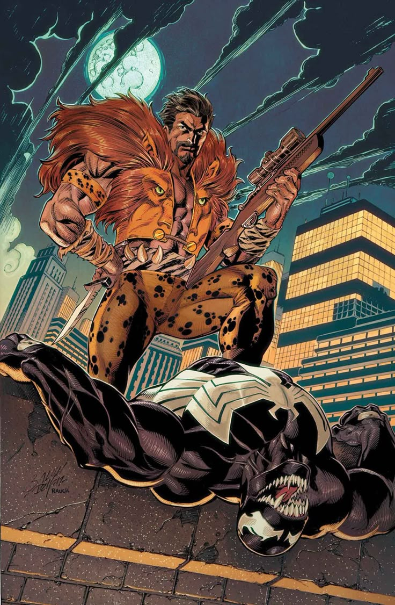
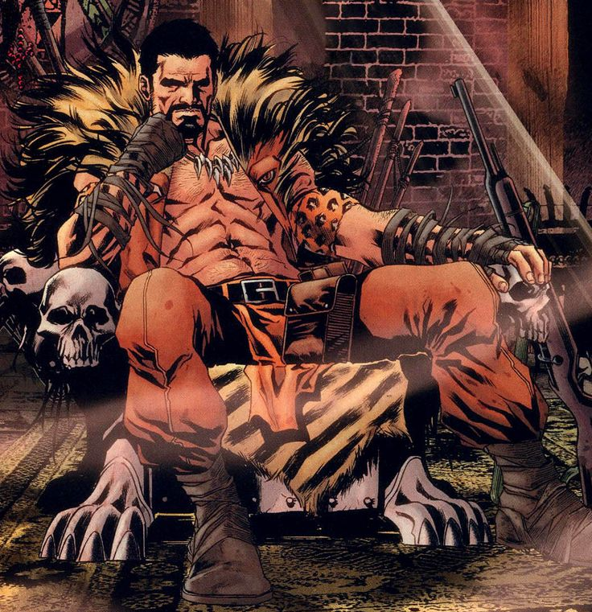
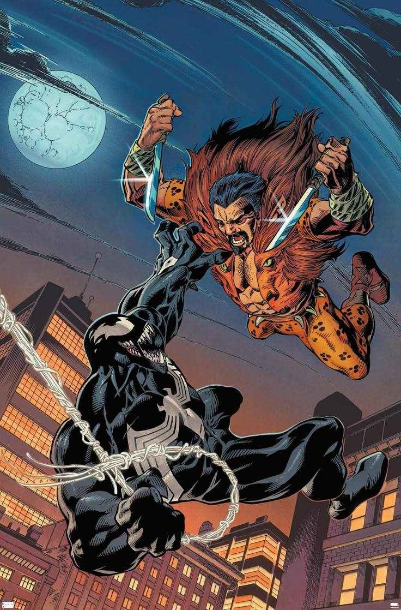
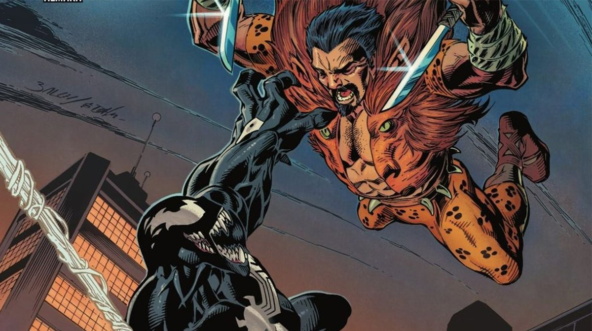
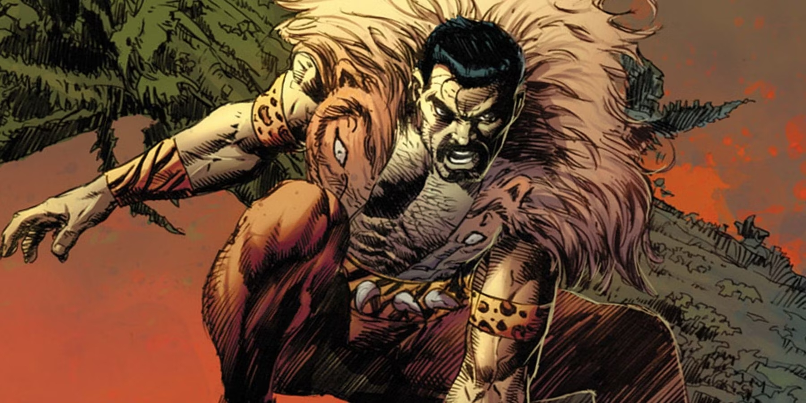
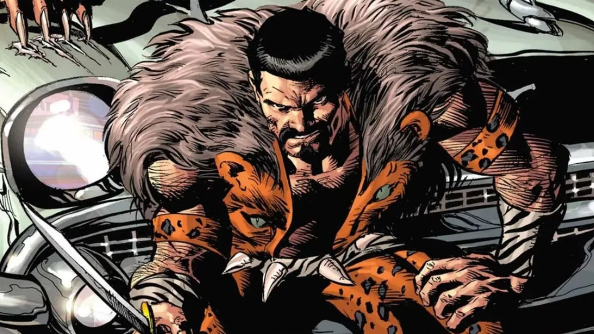